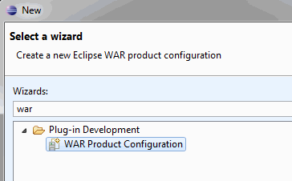

The following tutorial shows how to create a WAR file that contains the org.eclipse.rap.demo project as a RAP application.
Note: As with RCP applications there are a wide variety of possible configurations. What's given in this tutorial is just one possibility.
As prerequisites we assume that you:

Building a WAR file using the WAR Products tooling is centered around a .warproduct configuration. The .warproduct configuration is entirely managed by the WAR Products tooling to simplify war deployment. It's format is internal and is not intended to be read by tools other than the WAR Products tooling. To create a .warproduct configuration you can use a working launch configuration. Follow these steps to create a rapdemo.warproduct configuration for the RAP demo application:
WAR Products tooling provides a form-based multi-page editor to manage a .warproduct configuration. The editor has the following pages:


From the Overview page of the .warproduct configuration editor start the WAR Product export wizard (this can also be reached by launching the general Export Wizard), enter the location for the war archive and press Finish if no validation errors exist. After that you can deploy the WAR file to a servlet container. See the uncommented sections in the web.xml for more information on how to activate the OSGi-console. This is useful if you run into troubles while deploying the generated WAR file.
To deploy your own application like described above you will have to create your own .warproduct configuration. The configuration should contain the same plug-in references as the rapdemo.configuration (except the demo-plug-in of course!) plus the plug-ins that make up your application. It is important that your plug-ins reference the Servlet API by using the Import-Package directive instead of the Require-Bundle directive. See the MANIFEST.MF of the demo project for an example.
Note: Besides the application server log files there also exists an Equinox framework log that can be found under the webapp's work directory, e.g. on Tomcat:
<tomcat-installation>/work/Catalina/localhost/demo/eclipse/workspace/.metadata/.log
In case Equinox isn't able to start at all, you may also look for log files at:
<tomcat-installation>/work/Catalina/localhost/demo/eclipse/configuration
You can use the following checklist to find errors when your exported application does not work:
<init-param> <param-name>commandline</param-name> <param-value>-console</param-value> </init-param>
telnet localhost <port>.ss in the console and see if all bundles are
started. If not try starting them with
start <bundle-id>.
The stack traces may hint to what is missing.ss-listing who's state is RESOVLED.The product configuration is based on featureson the Overview page.
<tomcat_install>/work/Catalina/localhost/<webapp_name>
in Tomcat).
Further hints can be found in the RAP FAQ